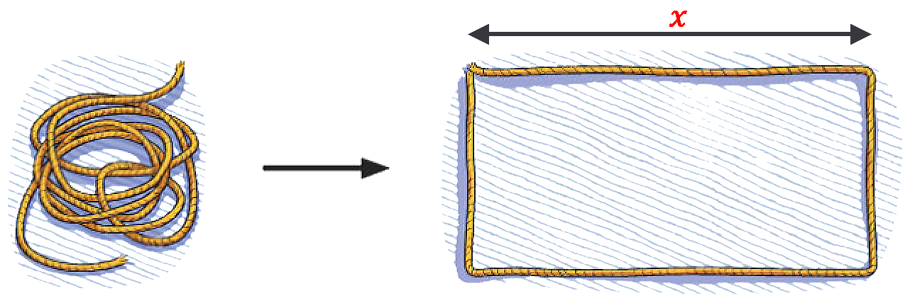
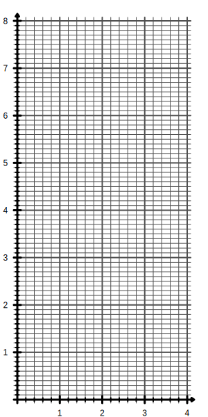
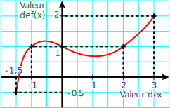

Avec une corde de longueur 11m étendue sur le sol, on fabrique un rectangle.
On désigne par $x$ la longueur d'un côté de ce rectangle.

Quelles sont les dimensions du rectangle lorsque $x$ = 1m ?
Calculer l'aire du rectangle dans ce cas.
Mêmes questions pour $x$ = 2m.
Exprimer les dimensions du rectangle en fonction de $x$.
Démontrer que l'aire $A$ du rectangle s'exprime, en fonction de $x$, par la formule : $A(x)=5,5x-x^2$
On cherche la valeur de $x$ pour laquelle l'aire $A$ du rectangle est la plus grande possible.
Pour les différenres valeurs de $x$ données dans le tableau, calculer l'aire $A(x)$ du rectangle.
$x$
1
1,4
1,8
2,2
2,6
3
3,4
3,8
$A(x)$
Pour quelle valeur de $x$, l'aire $A$ du rectangle semble-t-elle la plus grande ?
Dans un repère (comme celui fourni), placer tous les points dont les coordonnées $(x;A(x))$ sont données dans le tableau précédent.
Estimer graphiquement l'aire maximale du rectangle.

Notion de fonction :
Définition :
Un processus qui, à un nombre de départ, associe un unique nombre d'arrivée s'appelle une fonction.
Si on note $x$ le nombre de départ et $f$ la fonction, on note alors $f(x)$ (lu « $f$ de $x$ ») le nombre d'arrivée.
Remarque :
On définit une fonction ainsi :
$f:x \mapsto 4x+1$ ($f$ qui a $x$ associe $4x+1$)
ou plus simplement $f(x)=4x+1$
Attention, $f$ est une fonction alors que $f(x)$ est un nombre.
Exemple :
Avec $f(x)=4x+1$ $f(5)=4\times5+1=20+1=21$ donc $f(5)=21$.
Avec $g(x)=\frac{3-x}{6+x}$ $g(5)=\frac{3-5}{6+5}=\frac{-2}{11}$ donc $g(5)=\frac{-2}{11}$.
Vocabulaire :
Dans une fonction qui à $x$ associe $f(x)$ on dit que :
$f(x)$ est l'image de $x$ par la fonction $f$.
$x$ est un antécédent de $f(x)$ par la fonction $f$
Exemple :
Avec $f(x)=4x+1$
L'image de 5 est 21 car $f(5)=21$.
Un antécédent de 49 est 12 car $f(12)=49$.
Remarques :
L'image d'un nombre est unique.
Il arrive parfois qu'un nombre n'ait pas d'image,
on dit dans ce cas que la fonction n'est pas définie
en cette valeur.
Par exemple $g(x)=\frac{3-x}{6+x}$ n'est pas défini
pour $x=-6$ pour éviter la division par 0.
Un nombre peut avoir 0 ; 1 ou plusieurs antécédents.
Par exemple avec $h(x)=x^2$ :
-4 n'a pas d'antécédent car un carré est toujours positif ;
0 a un unique antécédent : 0 $h(0)=0$
4 a deux antécédents : 2 et -2 $h(2)=4$
et $h(-2)=4$
Représentation graphique :
Dans un repère, on considère les points M de coordonnées
($x$ ; $f(x)$) où $f$ est une fonction.
L'ensemble des points M forme une courbe $C$ appelée la
représentation graphique de la fonction $f$.
$f(x) = -0,5x^3 + 0,5x^2 + 0,6x + 1,5$
$x$ =
$f(x)$ =
Images et antécédents :
Tableau de valeurs
Un tableau de valeur permet de définir une fonction. Par exemple :
Nombre $x$
0
1
2
3
4
5
Nombre $g(x)$
-5
-3
0
5,2
0
7
Ici on peut lire que $g(1)= -3$ et que 0 a deux antécédents 2 et 4.
⚠️ Un tableau de valeur n'est que très rarement proportionnel.
Expression littérale :
Une expression permet de définir une fonction. Par exemple : $f(x) = 4x+1$
Une expression littérale permet de traduire un programme de calcul.
Choisir un nombre
Le multiplier par 4
Ajouter 1
Graphique :
Un graphique permet de définir une fonction. Par exemple :

On lit alors les antécédents sur l'axe des abscisses et l'image sur l'axe
des ordonnées. Par exemple $f(3)=2$ ou encore, 1 a trois antécédents -1, 0 et 2